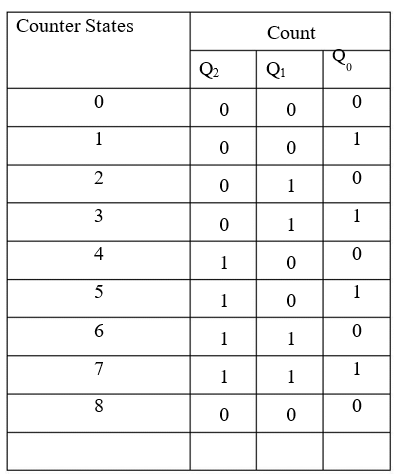
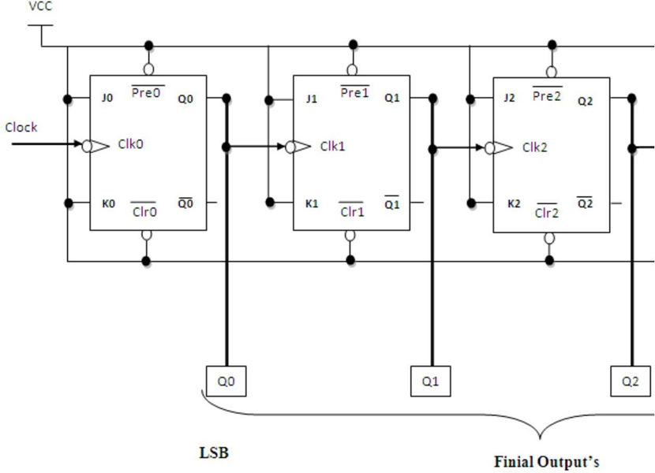
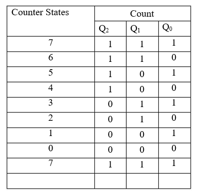
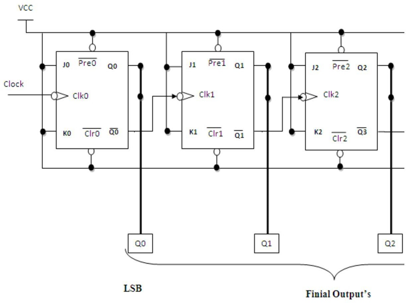
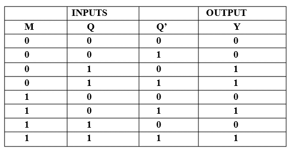
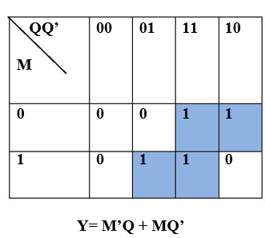
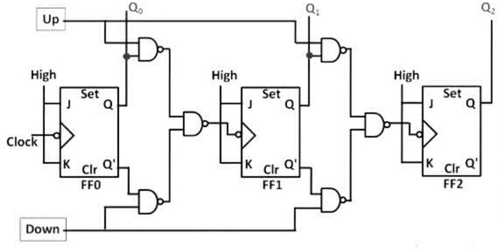

Design and implement 3-bit Up and 3-bit Down asynchronous counters using master-slave JK flip-flop IC 7476.
A digital counter is a set of flip-flop. When state changes in response to a pulse applied at i/p to counter. The flip-flopare connected such that their combined state at any time is binary equivalent of total no. of pulses that have occurred up to that time. Thus its name implies a counter is used to count pulse. A counter is used as frequency dividers. To obtain waveform with a frequency that is a specific fraction of the clock frequency.
The Asynchronous counter is also called as ripple counter .An Asynchronous counter uses T flip-flop to perform a counting function. The actual hardware used is usually J-K flip- flop connected to logic1.Even D flip-flops may be used here.
In asynchronous counter commonly called ripple counter, the first flip-flop is clocked by the external clock pulse & then each successive flip-flop is clocked by the Q or /Q’ output the previous flip-flop. Therefore, in an asynchronous counter, the flip-flop are not clocked simultaneously. The input of MS-JK is connected to VCC because when both inputs are one output is toggled.
Fig 1 shows 4 bit Asynchronous up Counter. Here Flip-flop A act as an MSB Flip- flop and Flip-flop D can act as an LSB Flip-flop. The clock pulse is connected to the Clock of Flip-flop D. Output of Flip-flop D (Qd) is connected to the clock of next flip-flop (i.e. Flip- flop C) and so on.
As soon as clock pulse change output is going to change (at the negative edge of the clock pulse) as an Up count sequence
Fig 2 shows 4 bit Asynchronous Down Counter. Here Flip-flop A act as an MSB Flip- flop and Flip-flop D can act as an LSB Flip-flop. The clock pulse is connected to the Clock of Flip-flop D. Output of Flip-flop D (Qd’) is connected to the clock of next flip-flop (i.e. Flip- flop C) and so on.
As soon as clock pulse change output is going to change (at the negative edge of the clock pulse) as a Down count sequence. For 4 bit down counter Truth table is as shown below.
In both the counters Inputs J and K are connected to Vcc hence, J-K Flip-flop can work in toggle mode. Preset and Clear both are connected to logic 1.
1] UP COUNTER:
Truth Table:

Logic Diagram:

2] DOWN COUNTER:
Truth Table:

Logic Diagram:

3- bit Asynchronous up/Down counter:
As the name indicates an up/ down counter which can count both in upward & downward direction. It is also called as a forward/backward counter or bidirectional counter so a control signal or a mode signal M is required to choose the directional of the count. When M=1 for up counting Q1 is transmitted to the clock of FF2 & M=2 for down counting Q1 is transmitted to the clock of FF2. This is achieved by using two AND gate & one OR gate as shown in fig. the external clock signal is applied to FF1.
The design of combination circuit as shown in fig is desired from the truth table. The combinational circuit is designed from the present state & next state. After solving the K-map for truth table of counter we get equation for clock signal so as Clock signal FF=Q1M+Q1M
Truth table of 3-Bit up/down Counter:
M=0 up counter, M=1 down counter:

K-Map:
Logic Diagram:
Follow the below steps
1. Connections were given as per circuit diagram.2. Logical inputs were given as per truth table.
3. Observe the logical output and verify with the truth tables.
Here you can embed an interactive simulation tool or provide links to simulation resources.
Q.1] What do you mean by Counter?
A Counter is a register capable of counting the no. of clock pulses arriving at its
clock inputs. Count represents the no. of clock pulses arrived. A specified sequence of states appears as the counter output.
br>
Q.2] What are the types of Counters? Explain each?
There are two types of counters as Asynchronous Counter and Synchronous Counter.
Asynchronous Counter: In this counter, the first flip-flop is clocked by the external clock pulse and then each successive flip-flop is clocked by the Q or Q’ o/p of the previous flip- flop. Hence in Asynchronous Counter flip-flops are not clocked simultaneously and hence called as Ripple Counter.
Synchronous Counter: In this counter, the common clock input is connected to all the flip-flops simultaneously.
Q.3] What do you mean by pre-settable counters?
A counter in which starting state is not zero can be designed by making use of the preset inputs of the flip flops. This is referred to as loading the counter asynchronously. This is referred to as pre-settable counter.
Q.4] What are the applications of synchronous counters?
- Digital clock
- Frequency divider circuits
- Frequency counters
- Used in analog to digital converters
Q.5] What are the advantages of synchronous counters over asynchronous counters?
- Propagation delay time is reduced.
- It can operate at a much higher frequency than the asynchronous counters.
Q.6] Ring counter is an example of synchronous counters or asynchronous counter?
In synchronous counter all the flip flops are clocked simultaneously.
Q.7] Twisted Ring (Johnson’s) counter is an example of synchronous counters or asynchronous counter?
In synchronous counter all the flip flops are clocked simultaneously.
Q.8] What is the difference between ring counter and twisted ring counter?
In ring counter pulses to be counted are applied to a counter , it goes from state to state and the output of the flip flop s in the counter is decoded to read the count. Here the uncomplimentary output (Q) of last flip flop is fed back as an input to first flip flop. Ring counters are referred as MOD ‘N’ counters. But in Twisted ring counter the complimentary output (Q bar) of last flip flop is fed back as an input to first flip flop. Twisted Ring counters are referred as MOD ‘2N’ counters.
Q.9] What are the applications of ring counters?
Ring counter outputs are sequential non-overlapping pulses which are useful for control state counters, Used in stepper motor, this requires pulses to rotate it from one position to the next. Used as divide by ‘N’ ((MOD ‘N’) counters.
Q.10] What are the applications of ring counter twisted ring counters?
- Used as divide by ‘2N’ ((MOD ‘2N’) counters.
- Used for control state counters.
- Used for generation of multiphase clock.
- Reference 1: “Digital Fundamentals” by Floyd & Jain
- Reference 2: R. P. Jain, “Modern Digital Electronics”, 3rd Edition, Tata McGraw-Hill
- Reference 3: 3. Malvino, D.Leach“Digital Principles and Applications”, 5th edition, Tata McGraw- Hill